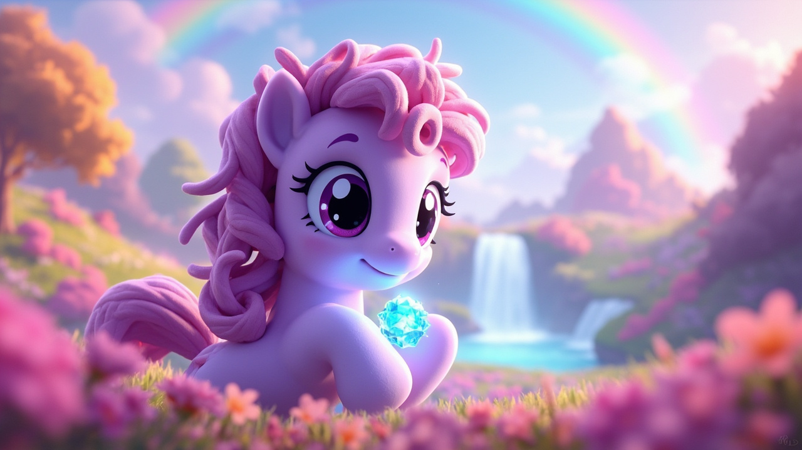
3D 卡通绘本 · 童声朗读版 · 13 页
点击翻页 · 开始阅读
在小马国最南边，有一片叫做"彩霞谷"的地方。这里住着一匹浅紫色的小马，名叫紫罗兰。她既不会飞，也不会什么厉害的魔法——她唯一擅长的，就是画画。
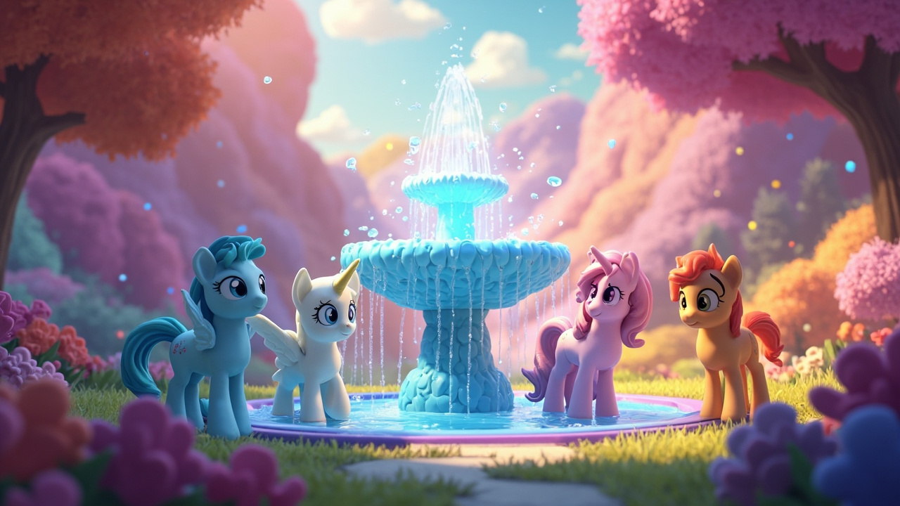
这天早晨，彩虹泉突然不喷水了！泉水是整个山谷的心脏，如果泉水停了，山谷里的花就会慢慢枯萎。飞马蓝天绕着泉水转了三圈，急得直跺脚；独角兽星光试着用魔法推水，可泉水就像睡着了一样，一动不动。
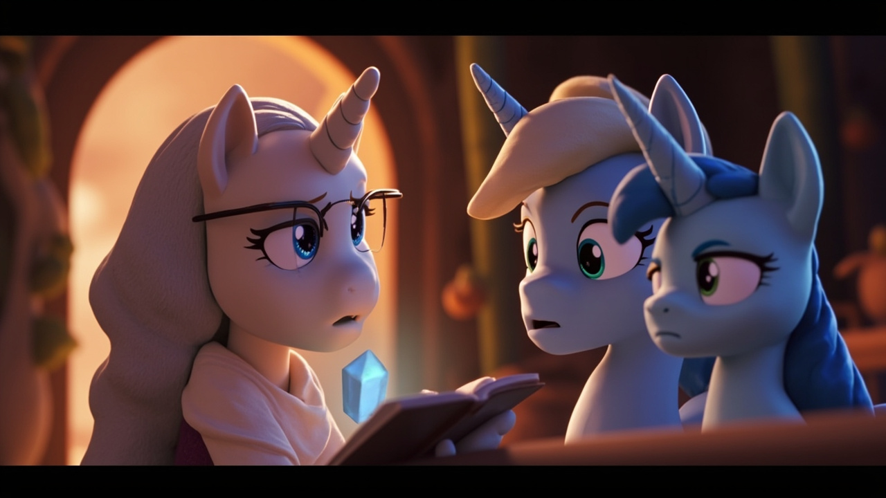
老马奶奶慢慢走过来："彩虹泉需要一颗'勇气水晶'放在泉底，水才会重新流起来。那颗水晶，很久以前掉进了北边的迷雾森林。"蓝天和星光听了都低下了头。
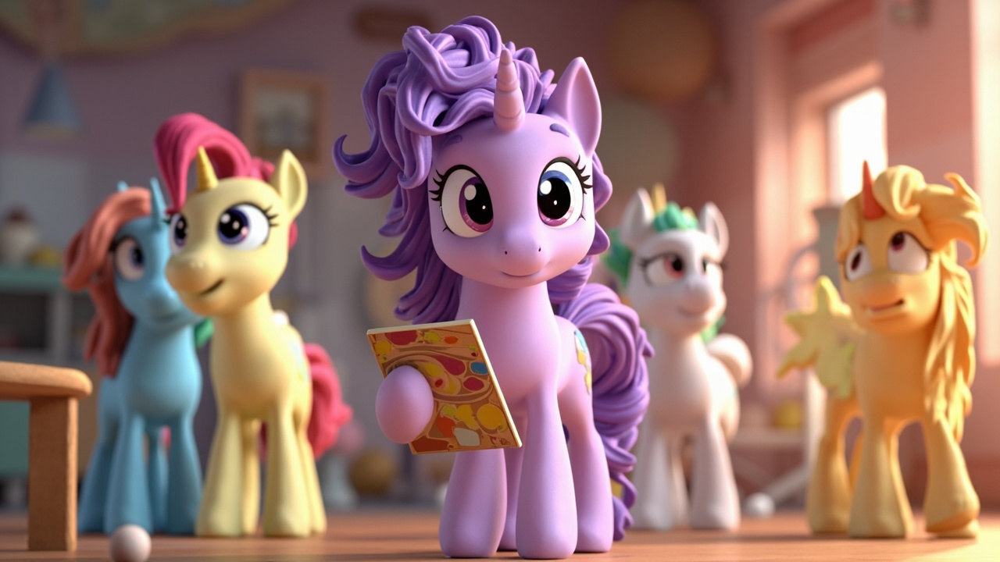
"我……我去吧。"所有小马都转过头来。"你？"蓝天瞪大了眼睛，"你连飞都不会！"紫罗兰有点不好意思，但她还是站直了身子："我可以带上我的画本和颜料。路上要是不认识路，我就把走过的地方画下来，就不会迷路了。"
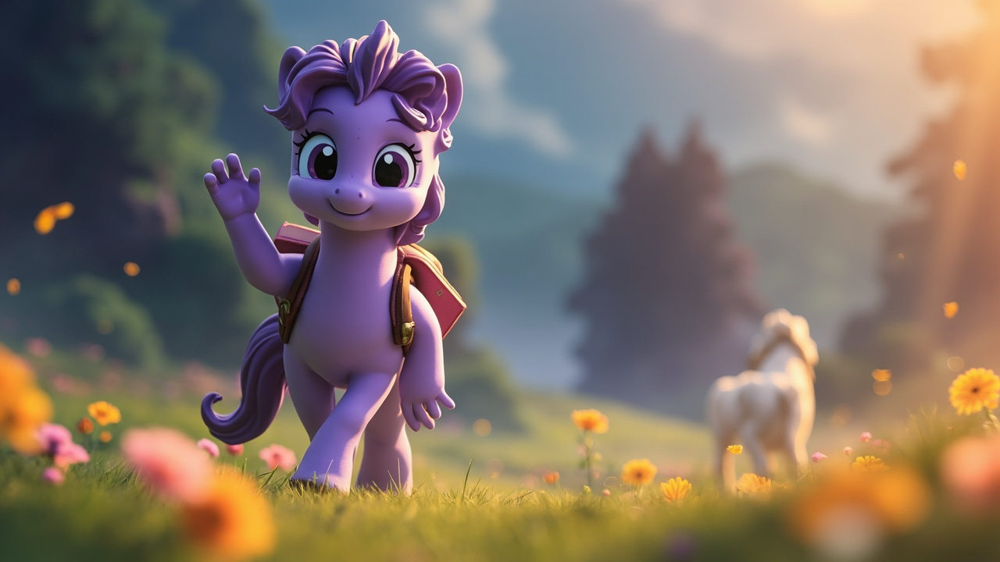
老马奶奶点了点头："去吧，孩子。记住，勇气不是不害怕，是害怕了还愿意往前走。"紫罗兰深吸一口气，背上小包，朝着迷雾森林出发了。
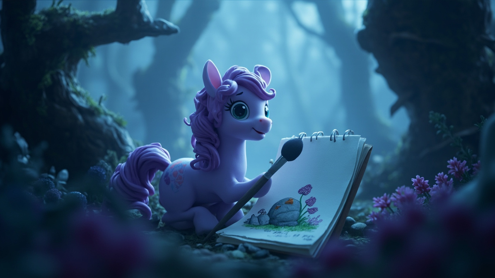
森林里雾气像牛奶一样浓，紫罗兰只能看到脚下一步远。她的心跳得很快，每走一段，她就蹲下来，在画本上画一个小记号——一棵歪脖子树，一块长着蘑菇的石头，一朵紫色的野花。
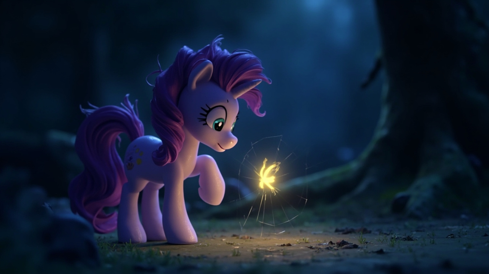
"呜呜呜……"一个细细的哭声传来。紫罗兰竖起耳朵，循着声音走过去。在一棵大树的根下面，一只小小的萤火虫被蛛网缠住了翅膀。"你别怕。"紫罗兰轻轻蹲下来，用蹄子一点一点拨开蛛网。萤火虫飞了起来，围着她转了一圈："谢谢你！"
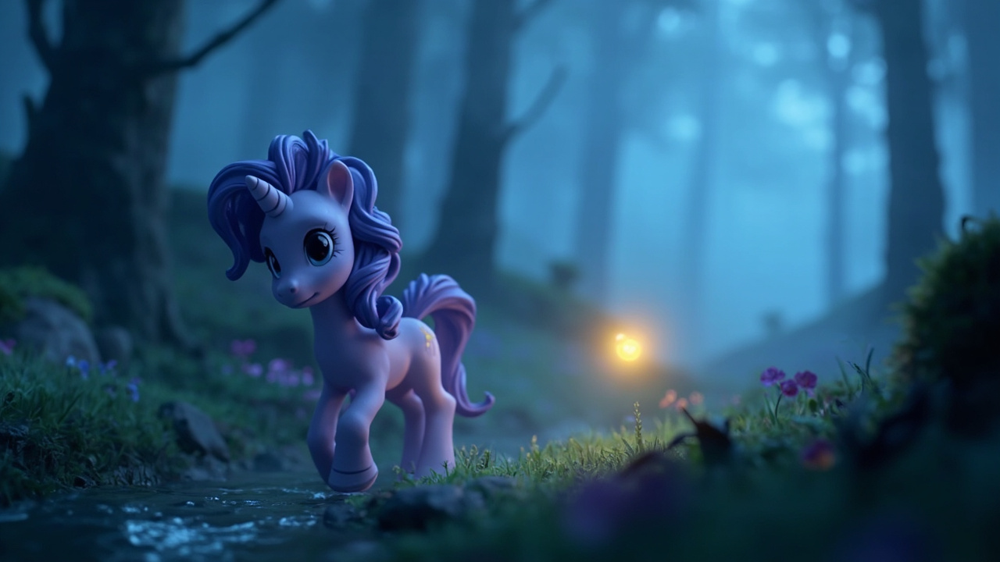
萤火虫闪了闪："迷雾森林里的事，我都知道。我带你去找吧！"有了萤火虫带路，紫罗兰走得快多了。萤火虫的光虽然很小，但在浓雾里就像一盏小灯笼，把前面一小片路照得暖黄暖黄的。她们走过小溪，绕过青苔山坡，来到了森林的最深处。
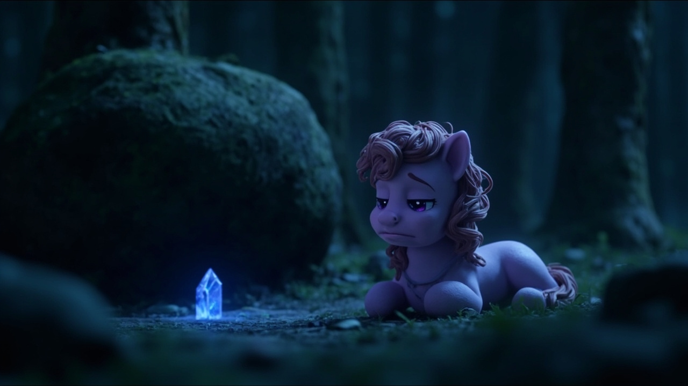
那里有一块大石头，石头下面压着一个闪着淡蓝色光的东西。"就是它！勇气水晶！"可是石头太重了，紫罗兰推不动。她推了左边，石头不动；推了右边，还是不动。紫罗兰坐在地上，有点想哭。
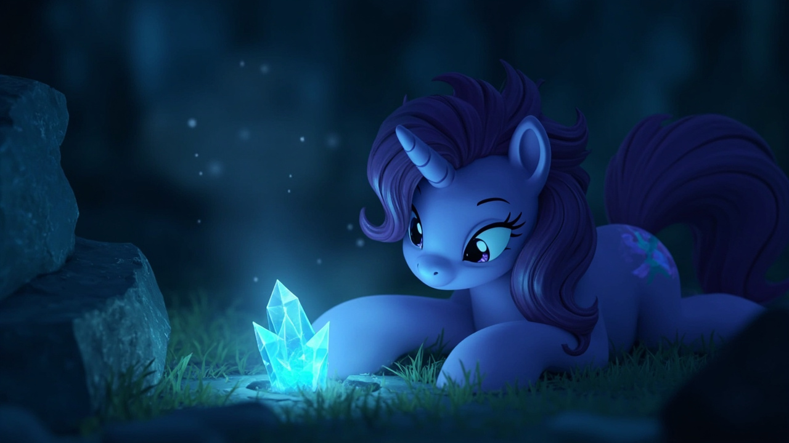
但她想起了奶奶的话——"勇气不是不害怕，是害怕了还愿意往前走。"她擦了擦眼角，站起来，重新看了看那块大石头。石头底部有一条细细的缝，刚好能伸进去一只蹄子。紫罗兰趴下来，把蹄子伸进缝里，慢慢地、一点一点地把水晶往外拉——"啵！"水晶出来了！
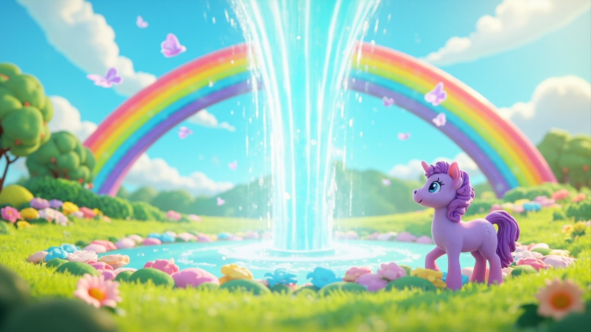
它小小的，只有一颗苹果那么大，但在紫罗兰的蹄心里，发出了一团温柔的蓝光，把整片迷雾都照亮了。紫罗兰抱着水晶跑回彩霞谷，把水晶轻轻放进彩虹泉的泉底。过了一会儿，泉水"咕嘟咕嘟"冒出了泡泡，接着，一道彩虹从泉底冲上了天！鲜花重新开了，草地重新绿了。
蓝天飞到紫罗兰面前，红着脸说："对不起，紫罗兰。我之前觉得画画没用，但你用画本记住了路，还带回了水晶——你比我勇敢多了。"星光也走过来："你虽然没有魔法，但你的心就是最厉害的魔法。"紫罗兰笑了。她忽然明白，画画让她学会了观察，学会了记住每一个细节，也学会了在害怕的时候，还能找到一条回家的路。
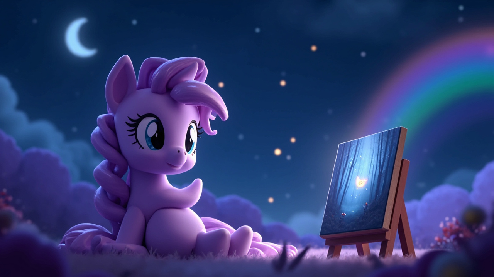
那天晚上，紫罗兰坐在彩虹泉边，画了一幅画。画里有浓雾、有大石头、有一条弯弯曲曲的小路，还有一个浅紫色的小身影，正低着头，一步一步往前走。旁边有一只小萤火虫，闪着微弱却温暖的光。她在画的下面写了一行字：
"再小的光，也能照亮前方的路。"
勇气在心里
亲爱的宝贝，每个人都有自己擅长的事情。也许你会觉得自己的本领不够厉害，但当你用真心去做一件事，再小的才能也能创造大大的奇迹。记住——勇气不是不害怕，而是害怕了，还愿意往前走一步。你每走一步，都在变勇敢一点点。
晚安，小朋友，愿你今晚的梦里，也有一颗亮亮的小水晶陪你。💜
点击书页左/右半区翻页 · 或按 ← → 方向键